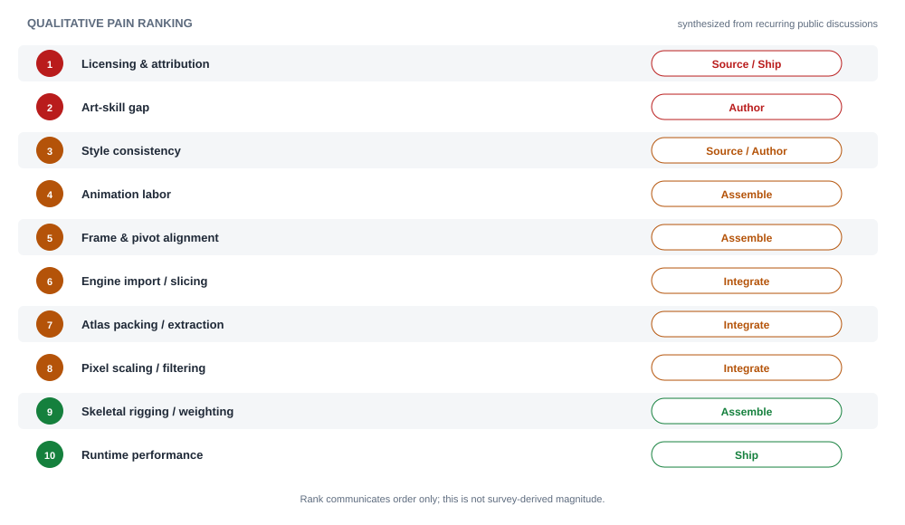

Free asset hubs
itch.io (huge free tier, e.g. Mana Seed base, Tiny Swords, Ninja Adventure), OpenGameArt (home of LPC), Kenney (CC0), CraftPix free section.
Market Research
How solo and small-team developers find, make, animate, integrate, and ship 2D sprites today - their stack, their tools, and the friction we could remove.
Across forums and tool docs, the same reading order recurs. Each stage is where a different class of problem appears.
1 · Source
Find or decide on art: free packs, marketplace buys, commissions, or "I'll make it myself." Placeholder art is used to start moving immediately - often under a jam clock.
2 · Author
Draw/edit sprites in a pixel or raster tool (Aseprite et al.), define a palette, and build frames.
3 · Assemble & animate
Turn frames into animations (walk/idle/attack across directions), set pivots, and either frame-animate or rig with 2D bones.
4 · Integrate
Pack into atlases, slice sheets, import into the engine, wire up animation state machines, and fix filtering/scaling.
5 · Ship
Polish (2D lighting, effects), optimize, and - critically - compile correct credits/licenses for every asset used.
There is no single stack, but the choices cluster tightly. The table below reflects what indies actually reach for, per public tool threads and engine docs.
| Layer | Common choices | Notes |
|---|---|---|
| Pixel-art editor | Aseprite, Pyxel Edit, GraphicsGale, Cosmigo Pro Motion, Piskel (free/web), Krita, GIMP | Aseprite is the de-facto standard: layers, onion-skinning, palettes, sheet export, CLI, Lua scripting. |
| Raster / vector | Photoshop, Photoshop Elements, Paint.NET, Inkscape (vector), Adobe Fireworks (legacy favorite) | Vector is used for UI and hi-res 2D; often rasterized at runtime for performance. |
| Skeletal / cutout animation | Spine, DragonBones, Spriter, Unity 2D Animation (bones/rigging) | Trades frame-by-frame labor for rig setup + weighting complexity. |
| Frame animation | Pencil2D, Synfig | Hand-drawn, one frame at a time - the most labor-intensive path. |
| Packing / atlas | TexturePacker, engine-native atlas tools, Aseprite slices/export | Atlases cut draw calls; packing/extraction is a recurring friction point. |
| Engine | Unity, Godot, Unreal (Paper2D), GameMaker, Phaser, LÖVE, pygame, MonoGame, Construct | Each has its own import, slicing, pivot, and animation-state conventions. |
Sourcing dominates the early pipeline. The marketplaces are large and free tiers are deep, which is exactly why sourcing - and its licensing - is such a load-bearing problem.
6,534
Free sprite asset packs tagged on itch.io alone
565k+
Games created for jams hosted on itch.io
22k
Devs joined a single GMTK Game Jam
CC0→GPL
License spread they must reconcile per asset
itch.io (huge free tier, e.g. Mana Seed base, Tiny Swords, Ninja Adventure), OpenGameArt (home of LPC), Kenney (CC0), CraftPix free section.
Unity Asset Store, itch paid packs, GameDev Market, CraftPix premium, GraphicRiver - for consistent, larger, or exclusive sets.
LPC/Universal generators for modular characters; Fiverr/Discord/portfolio commissions when a bespoke style is needed.
Yes - many indies start with jams and free assets
Jams are a primary entry point: itch.io alone has hosted 565,112 jam games. Events like GMTK, Brackeys, Ludum Dare, and Godot Wild Jam run on tight 2-7 day clocks, so participants lean on free packs and placeholders. The Kenney Jam is explicitly "create a game using only Kenney or KayKit assets" - proof that "grab assets, build fast" is a first-class workflow, not a shortcut.
Get a usable character on screen in minutes; placeholder now, polish later.
One palette, one perspective, one resolution across every asset - even when mixing sources.
Mix bodies, clothes, hair, and gear; recolor freely (the whole appeal of LPC-style generators).
Idle/walk/run/attack/hurt in all needed directions, with stable pivots and timing.
Atlases + metadata (JSON/plist) that import cleanly into Unity, Godot, GameMaker, Phaser, etc.
Edit an asset once and have it update automatically in the running game/project (e.g. Godot) - no manual re-export, re-import, or re-slice on every tweak.
A scriptable command-line interface so coding agents and build pipelines can automate the non-artistic steps - generate, export, sync, update credits - headlessly.
Know exactly what license each asset carries and generate correct attribution automatically.
These recur across gamedev Q&A and tool discussions. They are grouped by pipeline stage and scored by how often/painfully they surface for a typical indie.

| Problem | Stage | Why it hurts |
|---|---|---|
| Licensing & attribution | Source / Ship | Mixed CC0/CC-BY/CC-BY-SA/OGA-BY/GPL terms; missing credits risk takedowns; DRM-store clauses are ambiguous. |
| Art-skill gap | Author | Most indies are programmers; producing good pixel art is a separate craft and time sink. |
| Style consistency | Source / Author | Mixing packs yields clashing palettes, resolutions, and perspectives. |
| Animation labor | Assemble | Drawing every frame in every direction is enormously time-consuming. |
| Frame & pivot alignment | Assemble | Differently sized frames jitter; inconsistent pivots break positioning. |
| Engine import / slicing | Integrate | Per-engine sheet slicing, pivots, and metadata differ and must be redone. |
| Atlas packing / extraction | Integrate | Packing for draw-call efficiency, and pulling sprites back out of atlases. |
| Pixel scaling / filtering | Integrate | Blur from bilinear filtering; subpixel movement at arbitrary resolutions. |
| Skeletal rigging / weighting | Assemble | 2D bones save frames but add rig/weight-painting complexity and glitches. |
| Runtime performance | Ship | Overdraw, texture sizes, and draw calls on low-end targets. |
| Problem | Today's workaround | Residual pain |
|---|---|---|
| Can't draw | Buy/download packs; use LPC/Universal generators; commission; use placeholders | Limited to others' styles; commissions cost money & time |
| Style clash | Stick to one artist/pack; restrict palette; recolor manually | Narrows choice; manual recolor is tedious and error-prone |
| Animation effort | Reuse pack animations; Spine/DragonBones rigs; onion-skinning in Aseprite | Rig setup complexity; frame-by-frame still slow |
| Frame/pivot jitter | Uniform frame canvas; manual pivot tuning; trim + re-align | Fiddly, repeated per asset and per engine |
| Packing & export | TexturePacker; Aseprite export; engine importers | Extra tools; metadata format juggling |
| Licensing | Track credits by hand; keep CREDITS.csv; read each license | Easy to get wrong; scary for commercial/DRM releases |
Beyond the core pipeline, two capabilities repeatedly separate a "nice generator" from a tool that lives inside a developer's real workflow. Both target the Integrate stage, where fragmentation hurts most.
Today, every art tweak means re-export → re-import → re-slice → replay. That round-trip is friction on every iteration. The need is a live link: an asset edited in the tool updates automatically in the running project - e.g. writing directly into a Godot project's asset folder in the engine's native import format, so Godot's own reimport-on-change picks it up instantly. This turns iteration from a chore into a feedback loop.

How this could work per engine
Godot watches its project directory and reimports changed resources, so writing sprites/atlases (plus
.import settings) straight into the project makes edits appear live. Similar hooks exist
elsewhere - Unity's asset database reimport on file change, or file-watch plugins - so the pattern
generalizes into a per-engine "live target."
The artistic act stays human/interactive, but the plumbing around it is highly automatable. A first-class command-line interface lets coding agents and CI pipelines script the non-artistic steps - generating variants, exporting atlases, syncing to an engine, and refreshing credits - without a GUI. This is about coding automation, not generating art unattended.
| Automatable via CLI (coding) | Stays interactive (artistic) |
|---|---|
| Batch-generate character variants from a config/spec | Choosing the look, palette, and silhouette |
| Export atlases + metadata for a target engine | Judging animation feel and timing |
| Sync/deploy assets into a project (live link) | Hand-tuning individual frames |
| Regenerate and validate credits/licenses | Creative direction and style decisions |
| Run in CI or be driven by an agent headlessly | - |
Why a CLI matters now
Precedent exists in the ecosystem: Aseprite ships a CLI and Lua scripting, and lpcg is a
headless generator. Exposing the pipeline as a scriptable CLI/API makes the tool a building block that
agents and automated builds can orchestrate - a meaningful differentiator for developer-centric workflows.
The stack is fragmented: a generator here, an editor there, a packer, an engine importer, and a spreadsheet of credits. No single tool owns the path from "I need a character" to "engine-ready, correctly licensed, fully animated sprite." That seam is the opening.
Today (fragmented)
If we solve it (unified)
An exhaustive checklist, drawn from the needs and problems above, of what the project must cover to own this use case end-to-end:
Modular character generation + a searchable, style-tagged asset library (resolution, perspective, theme), with placeholder-quality output in seconds.
Shared palettes and auto-recolor so mixed sources read as one cohesive set; enforce grid, perspective, and outline rules.
Ready-made animation sets (idle/walk/run/attack/hurt), multi-direction, stable pivots, plus room for custom frames and 2D-bone rigs.
Atlases + metadata for Unity, Godot, GameMaker, Phaser, Unreal Paper2D; correct pivots, trimmed frames, pixel-perfect import presets.
Write assets straight into a project in the engine's native format so edits auto-update in the running game (Godot reimport, Unity asset DB, file-watch) - no manual round-trip.
Headless commands for generate, export, sync, and credits so coding agents and CI can automate the non-artistic pipeline. Artistic choices stay interactive.
Per-asset license tracking, license filtering (e.g. CC0/OGA-BY only for DRM stores), and one-click generated credits.
Zero-install, browser-based, with a generous free tier and jam-friendly speed - meeting indies where they already start.
Strategic takeaway
The winning wedge is unification + licensing certainty. Individual pieces (generators, editors, packers) already exist and are good. What no one owns is the connected path from sourcing to engine-ready, correctly attributed sprites. Nail that seam - starting from the LPC modular model this project already understands - and the tool becomes the default first stop for indie 2D art.